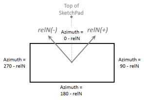

墙高、地形和指数用于计算风速修正值。
相对北： 相对北方向将用于将 SketchPad 上的墙壁方位角与真北联系起来，以确定风向影响。输入从 ContamW SketchPad 上的垂直线到正北的 -180 度（逆时针）和 +180 度（顺时针）之间的角度。

屋顶或墙壁高度： 输入建筑物迎风墙的高度。这是本节中给出的方程中的 H 值 处理天气和风 。输入零值会将风速修改器降低为零。无论风速如何，这都会导致计算出的风压为零，除非您覆盖外部气流路径的风压系数。 2005 年 ASHRAE 基础手册第 16 章中的图 4 [ 2005年美国采暖及制冷工程师协会 ] 显示基于墙顶局部风压的建筑物表面的相对风压。
地形 & 指数： 输入描述建筑物所在房间类型的风速剖面的值。 1993 年 ASHRAE 基础手册第 14 章中的图 4 [ 美国采暖及制冷工程师协会 1993 ] 显示代表性房间的地形常数和速度剖面指数。
更新的方法，来自中提出的方法 美国采暖及制冷工程师协会 1993 ，第 16 章介绍了考虑局部地形影响的方法 2005年美国采暖及制冷工程师协会 。参考 处理天气和风 有关如何在 CONTAM 中实现此方法的详细信息。
修改器： 这是风速调节器， Ch ，由 ContamW 根据上面的墙高、地形和指数值计算得出。该值将是为您在 SketchPad 上创建并为其选择可变风压选项的每个包络气流路径提供的默认值。参见部分 处理天气和风 有关该术语的更详细解释。